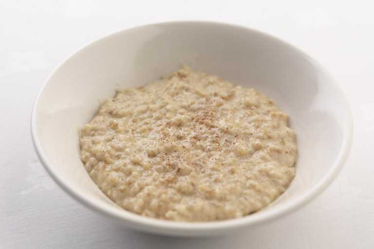

Porridge

Description
A winter traditional British breakfast made of smashed oats
Ingredients
- 1 Cup rolled oats
- 2 1/2 cups water
- 1 teaspoon salt
- 2 bananas, sliced
- 1 pinch ground cinnamon
- 1/2 cup cold milk (Optional)
Directions
- In Saucepan combines oats, water, salt, sugar, bananas, and cinnamon
- Bring mix to a boil then reduce heat to low
- Simmer until the liquid is absorbed, stirring often
- Pout into bowls, and top each with a splash of cold milk